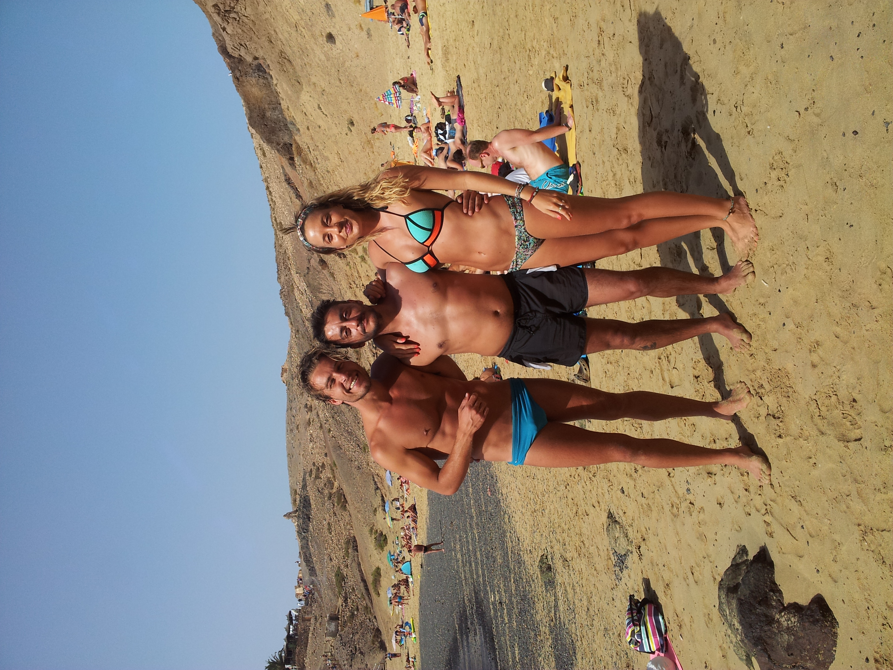

¿Qué estás viendo?
Te encuentras en Caleta de Famara, un pequeño núcleo costero situado al noroeste de Lanzarote. Sus calles, viviendas y actividad reflejan la estrecha relación que sus habitantes han mantenido históricamente con el mar y con el entorno natural que caracteriza esta parte de la isla.
Uno de los rasgos más distintivos del pueblo son sus calles de arena o jable, que le confieren un aspecto singular y ayudan a conservar parte de su carácter tradicional, diferenciándolo de otros núcleos urbanos de Lanzarote.



Interpretación
La historia de Famara es mucho más antigua que la propia Caleta. Los hallazgos arqueológicos realizados en la zona indican que este fue uno de los poblados aborígenes más importantes de Lanzarote, evidenciando la presencia humana mucho antes de la conquista europea.
El propio nombre de Famara podría proceder del antiguo término Famagui, utilizado en documentos históricos para referirse a aguadas o depósitos naturales de agua. Estas fuentes, conocidas posteriormente como las Fuentes de la Poceta o Fuentes de Famara, constituyeron durante siglos uno de los recursos hídricos más importantes de la isla y fueron fundamentales para el abastecimiento de la población durante las épocas de sequía.
La historia de Famara también está vinculada a los primeros asentamientos religiosos de Lanzarote. En 1413 los frailes franciscanos se establecieron en la zona durante aproximadamente treinta y tres años y construyeron un pequeño oratorio dedicado a la Virgen, conocido posteriormente como la Ermita de Las Mercedes, considerada la primera ermita mariana documentada en Canarias.
Con el paso del tiempo, Famara fue consolidándose como un enclave ligado a la pesca. Los pescadores construyeron sencillos almacenes de piedra y barro para guardar embarcaciones, pescado y aparejos. Muchos de estos almacenes terminaron transformándose en viviendas, dando origen al núcleo poblacional actual.
A comienzos del siglo XX se establecieron de forma permanente algunas de las familias que marcarían la historia de la localidad, entre ellas los Tavío, Morales, Batista, Padrón y Machín, considerados pioneros de la Caleta moderna.
Uno de los elementos más característicos del pueblo es la presencia del jable en sus calles, una arena natural que forma parte de la imagen tradicional de Famara y constituye un rasgo diferenciador respecto a otros núcleos urbanos de Lanzarote.
En las últimas décadas, el crecimiento del turismo ha impulsado nuevas actividades económicas y servicios, transformando progresivamente las funciones tradicionales de la localidad.
Actualmente, el pueblo combina su condición de espacio residencial y turístico con la conservación de una identidad propia, visible en su paisaje urbano, sus tradiciones y en numerosos elementos patrimoniales que forman parte de la memoria colectiva de la comunidad.
Observa a tu alrededor
- Las calles de arena que caracterizan a la localidad.
- La proximidad entre las viviendas y el mar.
- Las embarcaciones pesqueras.
- Los comercios relacionados con el producto local, la restauración y el turismo.
- La convivencia entre tradición y actividad turística.
- La presencia del Risco de Famara como telón de fondo.
Reflexiona
Caleta de Famara es mucho más que un lugar de visita. Es el hogar de una comunidad que ha vivido durante generaciones vinculada al mar, a la escasez de agua y al paisaje que la rodea.
Su historia refleja la capacidad de adaptación de sus habitantes a un entorno marcado por el océano, el viento y la limitación de recursos, construyendo una identidad propia que todavía hoy puede apreciarse en sus calles y en su forma de relacionarse con el territorio.
Mientras recorres el pueblo, recuerda que el respeto por los espacios públicos, las tradiciones locales y las personas que habitan este lugar contribuye a conservar la esencia de Famara para las futuras generaciones.
Disfruta del entorno respetando los espacios naturales, depositando los residuos en los lugares habilitados y siguiendo los senderos autorizados.
Recuerda que la arena, las dunas y el jable forman parte de un ecosistema vivo y protegido. No estaciones vehículos sobre la arena y utiliza únicamente las zonas autorizadas.